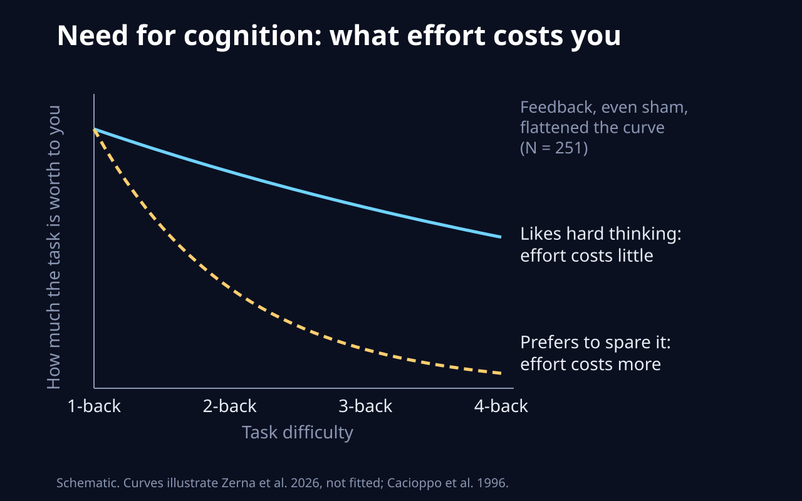
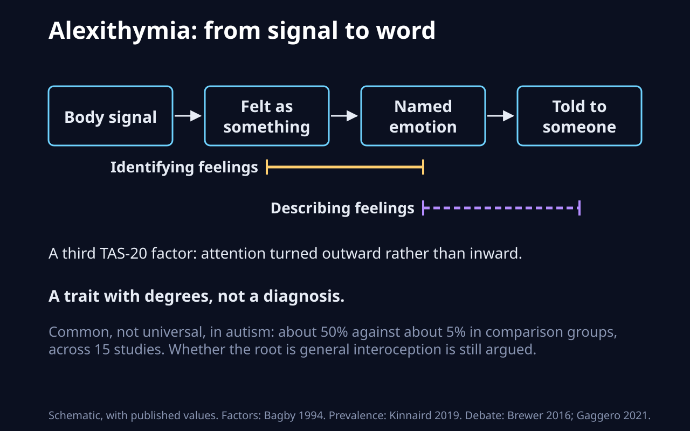
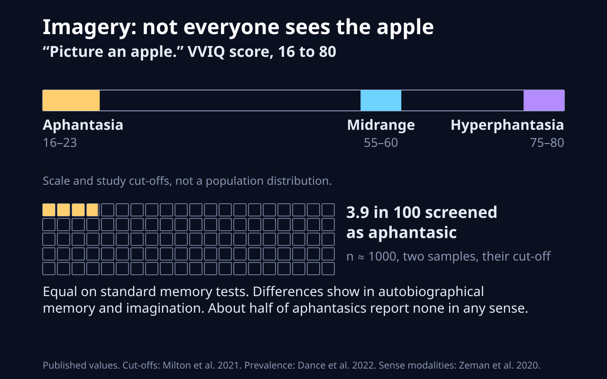
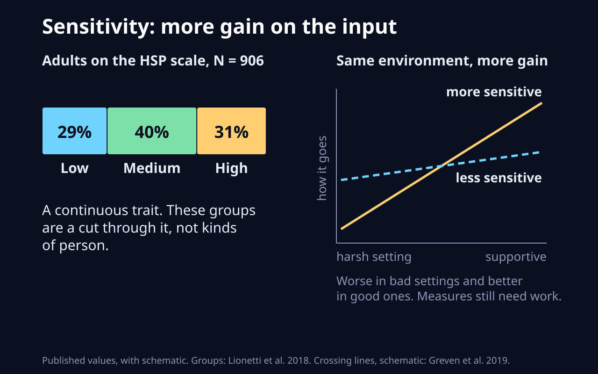
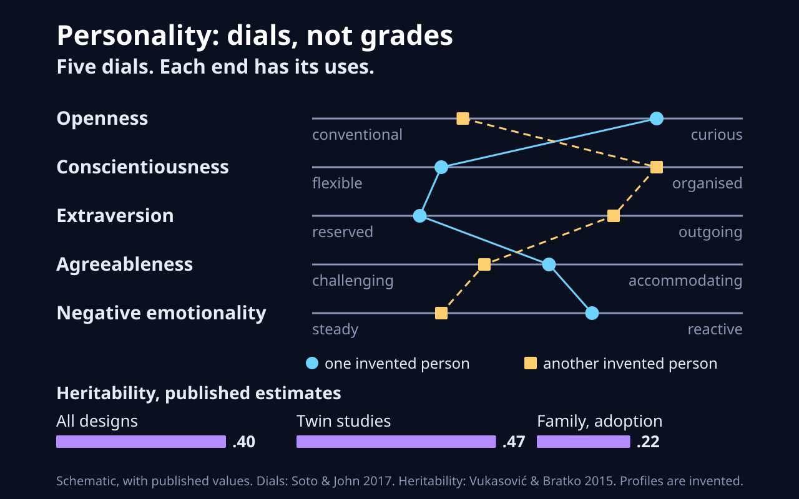

Variation, not deficit, and not a way of diagnosing each other: ask, do not infer. Ordered from motivation and attention out to personality traits.
1. Intrinsic and extrinsic motivation
Published values. Stages: Howard et al. 2017. Effects: Deci et al. 1999, 128 studies.
Why you do something, on a range from no reason, through reward and guilt, to valuing it and liking it for itself.
Analogy: a daemon that runs by itself against a cron job with a monitor attached. It breaks because people internalise: a job begun for external reasons can become your own, which software does not do.
2. Locus of control
Schematic. Rotter 1966; three-way split Levenson via Lachman 1986; stability Nowicki et al. 2018.
How far you expect outcomes to follow from your own actions rather than from others or from chance.
Analogy: where you look first in a postmortem, your commit, someone else's, or the flaky runner. It breaks because it is a general expectation about life, not an analysis of one incident.
3. Need for cognition

Schematic. Curves illustrate Zerna et al. 2026, not fitted; Cacioppo et al. 1996.
The tendency to engage in and enjoy effortful thinking.
Analogy: the price your scheduler charges for CPU-heavy work. It breaks because that price is not fixed: feedback moved it in the experiment.
4. Monotropism and polytropism
Schematic. Proposal: Murray et al. 2005. Measure: Garau et al. 2023 (preprint). Switching: Monsell 2003.
A proposed account of autistic attention: attention goes to a few interests at great depth, driven by interest, while polytropism spreads it across many.
Analogy: one core pinned to a job with a large warm cache, against many cooperative threads. It breaks because attention carries meaning and enjoyment, which a cache does not.
Drifting off task can be something you choose or something that happens to you; the two are measured separately.
Analogy: a scheduled background job against an unhandled interrupt. It breaks because you often cannot tell which one you just had.
6. Decision caution (DDM boundary)
Simulated. Same drift, bounds 1.0 and 2.2. Model: Ratcliff et al. 2016.
How much evidence you collect before committing: the boundary separation of the drift diffusion model.
Analogy: a sequential test's stopping threshold, or how many green CI runs you need before merging. It holds rather well, because the model is that computation. It breaks in that real thresholds also shift with instructions and context.
Schematic. Invented profiles. Dimensions: Garfinkel et al. 2015. Task debate: Ainley et al. 2020.
Sensing your body's internal state splits into measured accuracy, what you believe about it, and whether your confidence tracks it.
Analogy: a sensor, its dashboard, and the calibration between them. It breaks because here the reader is also the system being read.
8. Alexithymia

Schematic, with published values. Factors: Bagby 1994. Prevalence: Kinnaird 2019. Debate: Brewer 2016; Gaggero 2021.
A trait of difficulty identifying and describing your own emotions, with attention oriented outward.
Analogy: telemetry arrives but the labels are missing from the schema. It breaks where research suggests the signal itself may also be read differently.
9. Mental imagery: aphantasia to hyperphantasia

Published values. Cut-offs: Milton et al. 2021. Prevalence: Dance et al. 2022. Sense modalities: Zeman et al. 2020.
How vivid voluntary mental pictures are, from none to near perceptual.
Analogy: a system with or without a framebuffer that still computes the same answer. It breaks because the other results do differ, in autobiographical memory for example.
How often thought is experienced as words in a natural language, from near constant to near none.
Analogy: logging to stdout against running silently. It breaks because the silent system is not missing the computation; the task results show only some differ.
11. Environmental and sensory processing sensitivity

Published values, with schematic. Groups: Lionetti et al. 2018. Crossing lines, schematic: Greven et al. 2019.
How strongly a person registers and is affected by their environment, for better and for worse.
Analogy: amplifier gain, boosting both signal and noise. It breaks because people also shape and leave their environments.
12. Big Five traits

Schematic, with published values. Dials: Soto & John 2017. Heritability: Vukasović & Bratko 2015. Profiles are invented.
Five broad, continuous dimensions summarising how people tend to think, feel and behave.
Analogy: a config profile of defaults, overridable per process. It breaks because nobody set them on purpose and they drift with age.